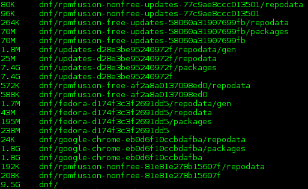
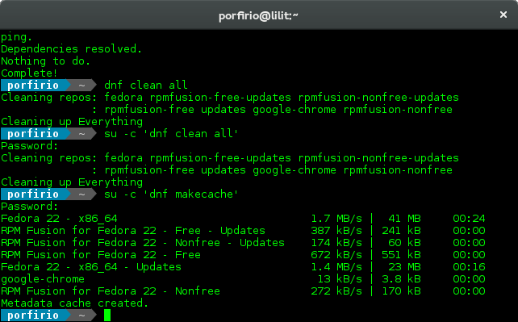
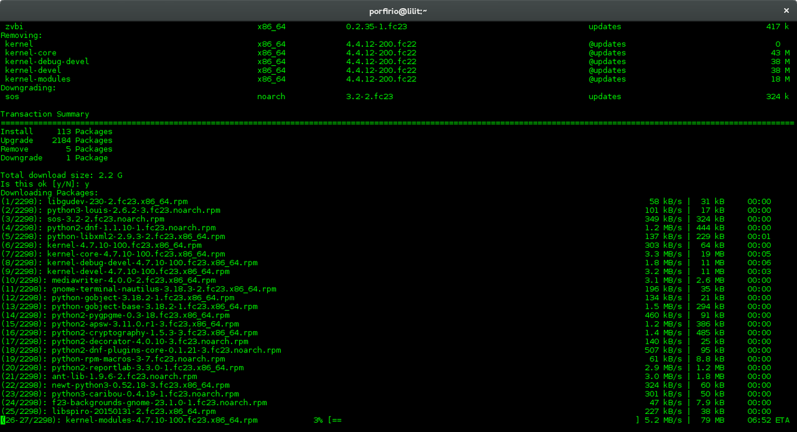

Actualizando de Fedora 22 a Fedora 23
Desde el Martes 26 de Mayo de 2015 hasta el 22 de Noviembre de 2016 estuve usando Fedora 22 en mi Lenovo ThinkPad T440p, lo que es equivalente a un año y medio usando fc22. El 19 Julio de 2016 fc22 entró en periodo EOL, esto quiere decir que ya no recibirá más actulizaciones de seguridad ni mantenimiento, por lo que actualizar a una versión estable más reciente era recomendable.
En este post explicaré como actualizar a Fedora 23 usando del administrador de paquetes dnf.
Luego de usar Fedora 22 por año y medio, la caché de paquetes de dnf llegó a ocupar aproximadamente 10GB de espacio en mi disco duro:
Para indicarle a dnf que conserve la caché de paquetes es necesario añadir la siguiente línea al archivo de configuración de dnf que está en /etc/dnf/dnf.conf:
su -c "echo 'keepcache=true' >> /etc/dnf/dnf.conf"
Actualizando a Fedora 23
Requisitos previos a la actulización
Primero nos aseguramos de tener suficiente espacio en nuestra partición /, ya que durante el proceso de actualización necesitaremos descargar la versión más reciente de todos y cada uno de los paquetes instalados en nuestro sistema. Considerando que existe la posibilidad que nuestra caché puede estar llena, es necesario remover los paquetes almacenados en ella para liberar espacio en caso de que nos haga falta:
su -c 'dnf clean all'
Antes de continuar, es necesario que asegurarnos que nuestro sistema tiene instaladas las actualizaciones más recientes disponibles desde los diferentes repositorios habilitados en nuestro sistema. Para ello, debemos reconstruir la caché de metadatos de paquetes:
su -c 'dnf makecache'
su -c 'dnf upgrade'
Instalar el plugin dnf-plugin-system-upgrade
DNF System Upgrade puede actualizar el sistema a una versión más reciente de Fedora, utilizando un mecanismo similar al utilizado para las actualizaciones de paquetes sin conexión. Los paquetes actualizados se descargan mientras el sistema se ejecuta normalmente y, a continuación, el sistema se reinicia en un entorno especial (implementado como un systmend target) para instalarlos. Una vez completada la instalación de los paquetes , el sistema se reinicia pero esta vez en la nueva versión de Fedora.
El primer paso es instalar el plugin dnf-plugin-system-upgrade:
su -c 'dnf install dnf-plugin-system-upgrade'
Y ahora procemos a descargar los paquetes necesarios para realizar el upgrade a Fedora 23.
Este proceso descargará todos y cada uno de los paquetes que tenemos instalado en nuestro sistema, en su versión más reciente disponible para el release que nosotros le indiquemos, en este caso el release será 23.
su -c 'dnf system-upgrade download --refresh --best --allowerasing --releasever=23'
En la siguiente captura de pantalla se puede apreciar la número de paquetes a descargar y la cantidad datos que implica su descarga:
De igual manera es posible actualizar a Fedora 24, aunque no recomiendo saltar a una versión n + 2 de Fedora, es decir, pasar de Fedora 22 a Fedora 24. A la fecha, las versiones estables más recientes son Fedora 24 y Fedora 25; Fedora 26 es Branched y Rawhide la versión en desarrollo continuo. Para actualizar a cualquiera de las versiones mencionadas, solo se debe editar el parámetro número en la opción --releasever=número , 24 para fc24, 25, para fc25, 26 para Fedora Branched y rawhide para actualizar a Rawhide. Hay que tener en cuenta que tanto Branched como Rawhide no son versiones estables de Fedora, por lo que su uso solo se recomienda a usuarios más experimentados.
Actualizando a Fedora 24:
su -c 'dnf system-upgrade download --refresh --best --allowerasing --releasever=24'
Actualizando a Fedora 25:
su -c 'dnf system-upgrade download --refresh --best --allowerasing --releasever=25'
Actualizando a Fedora Rawhide:
su -c 'dnf system-upgrade download --refresh --best --allowerasing --releasever=rawhide'
Finalmente, una vez terminada la descarga de los paquetes, es necesario reiniciar el sistema ejecutando el siguiente comando:
su -c 'dnf system-upgrade reboot'
Esto hará que la computadora reinicie. El sistema debería arrancar nuevamente utilizando el mismo kernel (el más reciente), pero esta vez iniciará el proceso de upgrade de Fedora 22 hacia Fedora 23.
Comments
Comments powered by Disqus